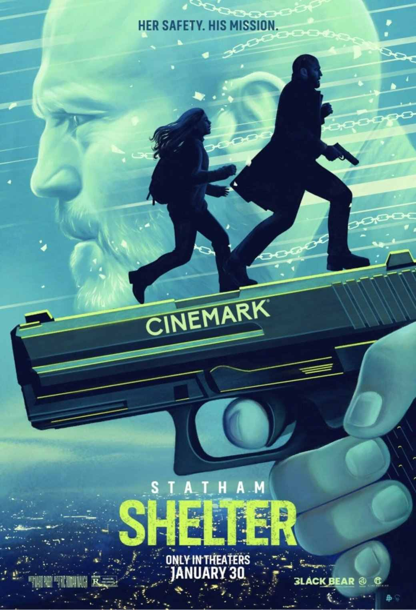
Оценка: ⭐⭐⭐⭐⭐
Фильм со смешным названием. А вообще ура, мой любимый жанр кино -- Джесон Стейтем. Давно пора написать исследовательскую работу на тему "Джейсон Стейтем как олицетворение безопасности и отеческой фигуры в кинематорграфе. Анализ привязанности юных леди к герою боевиков."
Вот сначала исследуйте вопрос, а потом скажите, почему мне так нравится кино, где дядюшка Джейсон всегда в одной роли и всегда выйдет победителем. Где мне не хватило стабильности и что это за травма?
Поэтому у меня рука не поднимается оценивать фильмы с ним ниже МАКСИМУМА шкалы. Я не объективна.
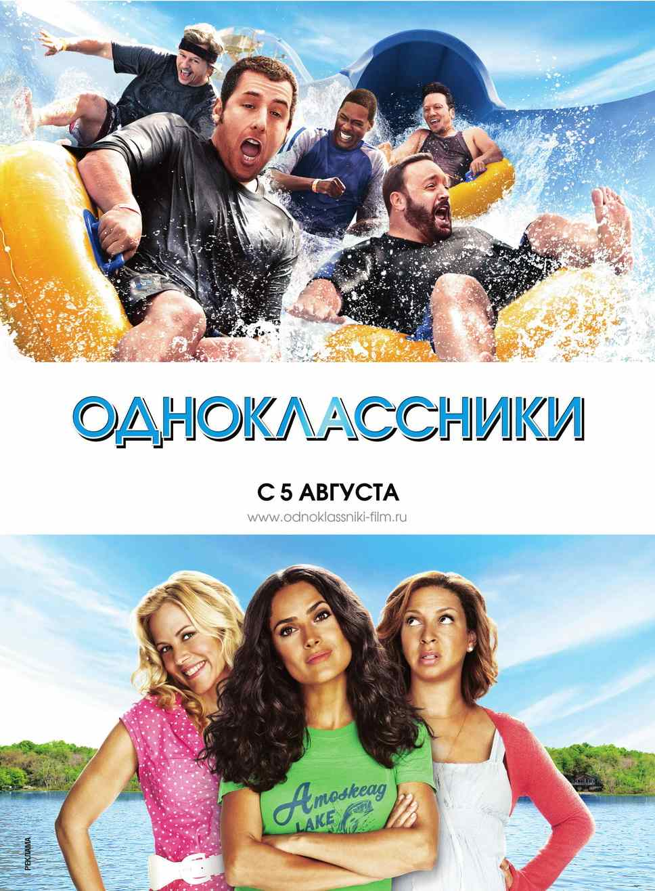
Оценка: ⭐⭐⭐⭐☆
Мне срочно надо было посмеяться!! Все в порядке, я посмеялась.
На самом деле, фильм показался достаточно душевным и милым. Наверное, каждый найдет в нем что-то свое и похихикает!
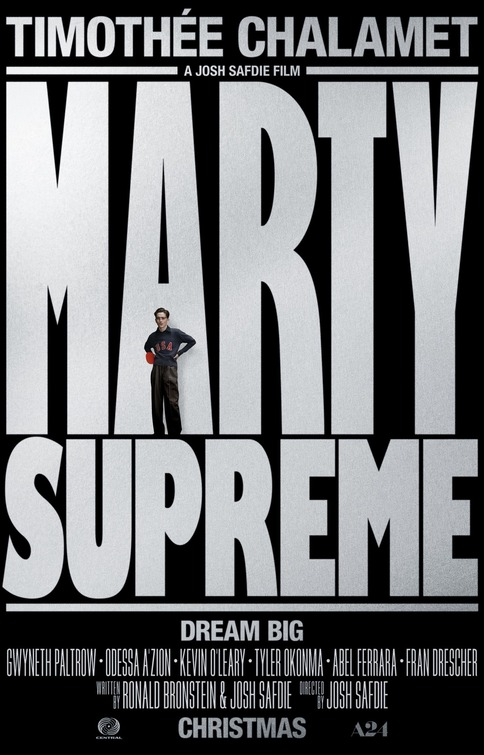
Оценка: ⭐⭐⭐☆☆
Нам всем надо стремиться к такой же самооценке как у Марти! Но только стремиться, прям точь-в-точь не стоит...
Мне тяжело смотреть фильмы про плохих людей, где суть сюжета это страдание всех окружающих Марти людей. Мне прям грустно от такого.
Конечно, впечатляет такая вера в себя, она прям гиперболизирована. Но конечная трансформация (или ее отсутствие?) для меня остается загадкой. Если Марти прозрел, то путь его развития оказался трудно прослеживаемым. Если он не изменился, то к чему эта сцена с ребенком?
Поэтому послевкусие от фильма несъедобное :(

Оценка: ⭐⭐⭐⭐⭐
Я не знала о чем этот фильм. Не имела ни малейшего понятия! Поэтому я просидела в полном напряжении все два часа.
Мне кажется, что я прожила все этапы принятия происходящего. И я продолжала быть в напряжении и тревоге даже после окончания фильма, теперь я поняла, что такое триллер
Тут прям хотелось вглядываться во все детали и разбирать сюжет полностью, настолько интересно.
Отдельно хочется отметить актерскую игру, без нее бы ничего не вышло. Я верила всем!! Поэтому у меня получилось прочувствовать все сюжетные повороты в этом фильме
Cпасибо Даше, Насте и всему кинозалу за это ощущение единства. Это были дружные вздохи, шутки и аплодисменты!!
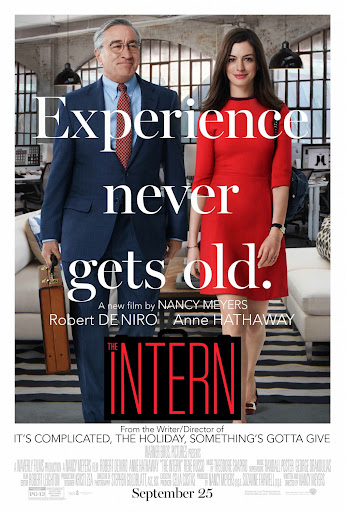
Оценка: ⭐⭐⭐⭐⭐
Во-первых, я люблю Энн Хэтэуэй. Во-вторых, после этого фильма послевкусие добра. Отличный актерский состав. Сцена с ограблением дома моя любимая!!
«Никто больше не говорит "мужики", вы заметили? Все стали вместо слова "мужики" говорить "мальчики". Это проблема, которую надо рассматривать комплексно».
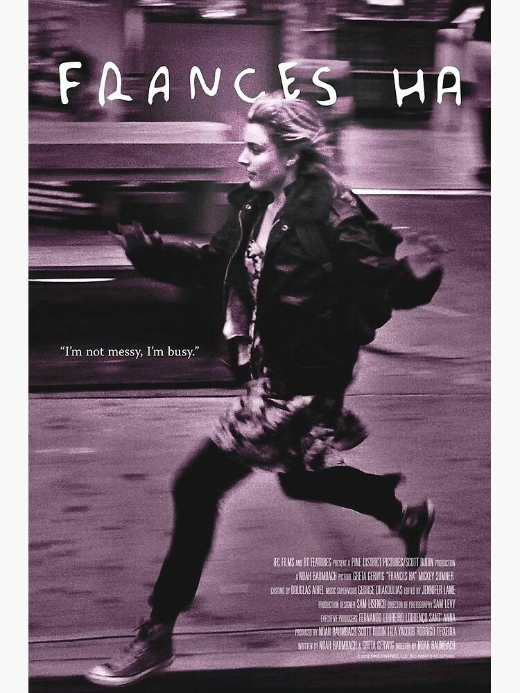
Оценка: ⭐⭐⭐⭐⭐
Хотя тут мне больше нравится название в оригинале: "Frances Ha".
Я долго думала, где я видела актрису, сыгравшую Френсис. А это оказалась Грета Гервиг. Она не только создала Барби, но и Леди Берд. Такую же живую женщину она играет сама в "Милой Френсис".
Милейшая Френсис, как же она хороша. Свободная, яркая и искренняя. Ну и немного "несвидабельная", но это потому что все остальные лохи зажатые.
Френсис живет по-своему: в собственном ритме и с собственным чувством такта. Зато она является собой. Чувствую всеми фибрами.
"Я нарочно кошу под бездарность"
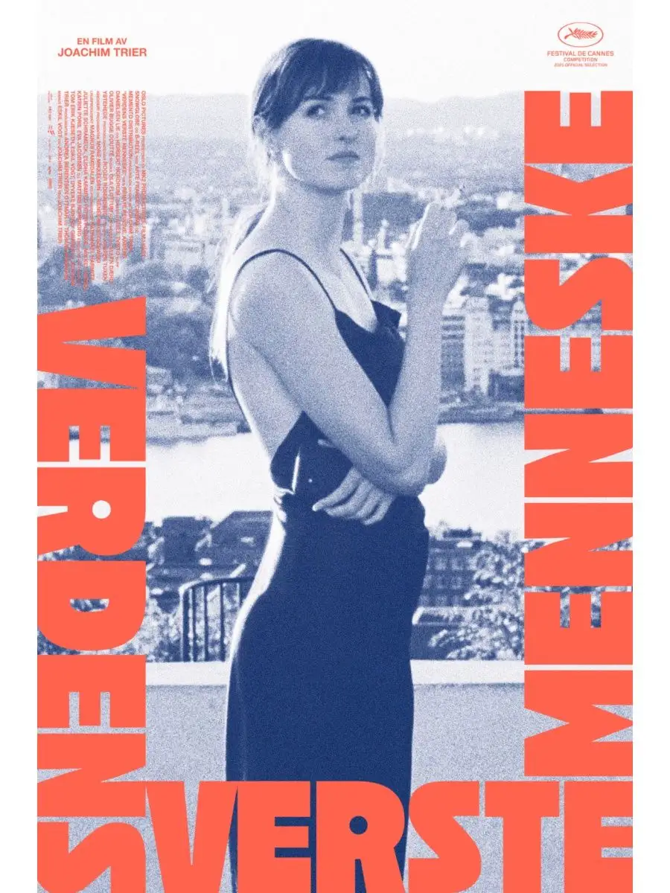
Оценка: ⭐⭐⭐⭐⭐
Это фильм про меня. Главная героиня описала все, что я чувствовала. Ее путь откликается. "Она сказала, что ее пугает одиночество. Что ей страшно будет жить без него. Что когда она уйдет, то будет как Бемби на льду. И именно поэтому она должна уйти"
Она не плохая, она просто живая. Она кричит, ругается, принимает неприятные для других решения, но она такая живая, что это все объясняет и ты ей все прощаешь. Очень рекомендую, очень советую, максимально прожила сюжет вместе с Юлией
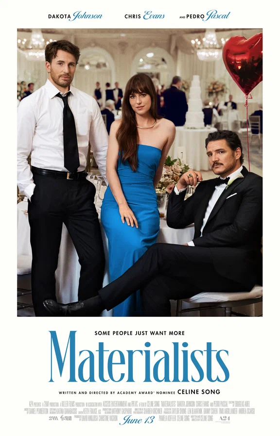
Оценка: ⭐⭐⭐⭐☆
Все еще фильмы с перелета. ✍️выбираем бедного Криса Эванса, а не богатого Паскаля. А если серьезно, то тут нам просто еще раз напомнили, что вообще-то 🤓 выбирать надо по любви, чтобы чувства чувствовать
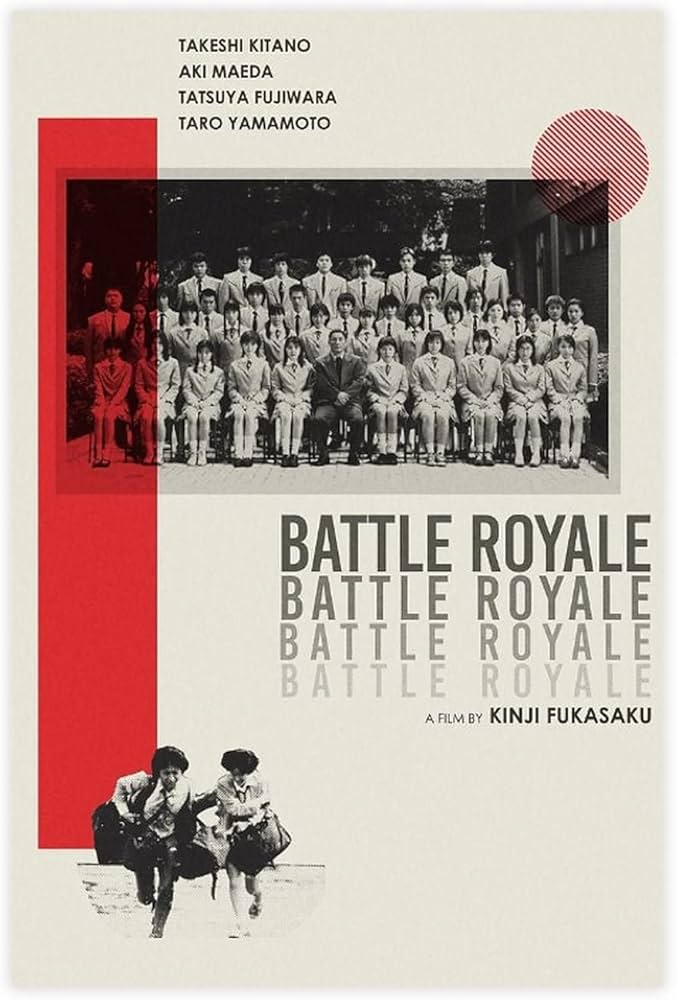
Оценка: ⭐⭐⭐☆☆
Говорю же, перелет был долгим. Главный вопрос фильма - сколько пуль надо, чтобы подкосить японского школьника? Впечатляющая воля к жизни
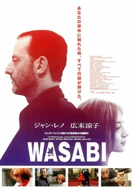
Оценка: ⭐⭐⭐☆☆
Мне нельзя писать рецензии спустя много времени после просмотра, потому что я помню только самые общие впечатления от этого фильма. Он меня посмешил, но, конечно, успел подустареть - не то, что назовешь вневременной классикой, скорее забавный хихик на время 5 часового перелета!!
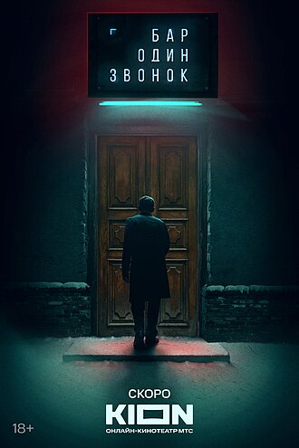
Оценка: ⭐⭐⭐⭐⭐
Да кто бы мог подумать, что я буду рыдать над актерской игрой Данилы Козловского. Все, все, я забираю всю свою предвзятость.
Мне очень понравилось! Антуражно, атмосферно, мистически. Все актеры впечатлили - все молодцы. Декорации, костюмы, свет, музыка, кадр, сценарий - все на высшем уровне. Не затянуто, динамично, красиво, что еще нужно? Спасибо всем причастным, рекомендую!!
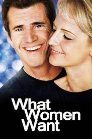
Оценка: ⭐⭐⭐⭐⭐
Новый год время ромкомов (шучу, любое время года - время ромкомов)! Здесь мне понравилось, что развитие персонажа было видно. Каждая сцена была к месту и показывала, как меняется отношение главного героя к окружающим людям. Тут это особенно заметно на контрасте с недавно посмотренным Вкусом жизни, где ты просто не понимаешь, почему персонаж меняется и совершает поступки — это просто не раскрыли. Здесь же все было очень постепенно и планомерно. Ставлю лайк за сюжет!
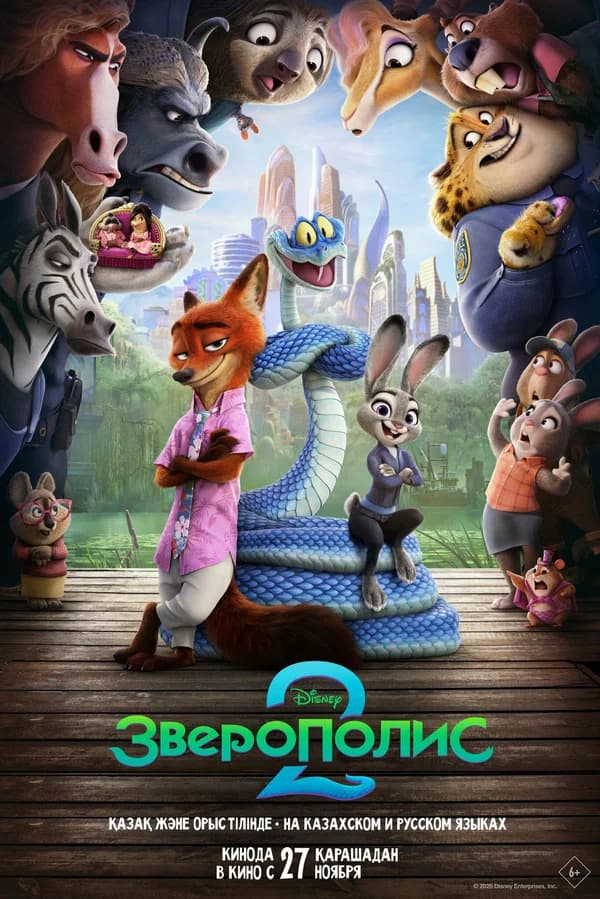
Оценка: ⭐⭐⭐⭐⭐
Сколько лет я ждала продолжение? Получилось просто волшебно. Я полностью ассоциирую себя с Джуди, а Ник это краш детства. Было приятно увидеться с ними снова! Хорошие шутки, активно развивающийся сюжет и куча отсылок, все как я люблю. Честно говоря, понравилось настолько, что сразу захотелось пересмотреть снова!
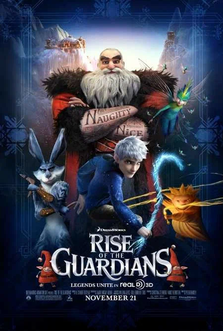
Оценка: ⭐⭐⭐⭐⭐
Милота! Не знаю, почему я так долго отрицала существование этого мультфильма, но вот теперь исправила ситуацию. Прекрасного чувствую Песочника, на деле являюсь Пасхальным Кроликом. Одобряю, самое то под новый год!
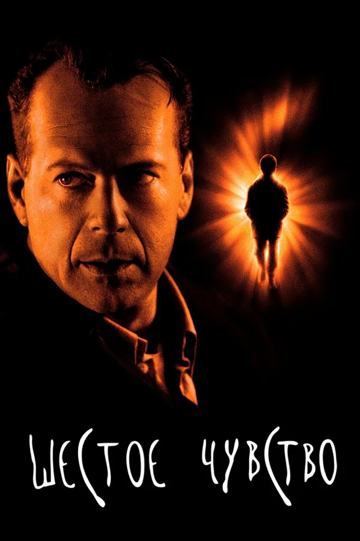
Оценка: ⭐⭐⭐⭐⭐
Как я могла не сразу догадаться о финальном повороте!!
Мне очень понравилось, особенно ценно то, что фильм правда вызвал эмоции и удивил. После финала даже захотелось сразу пересмотреть историю с начала!
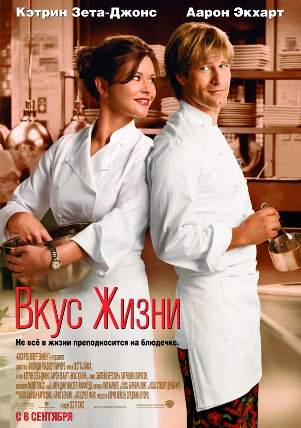
Оценка: ⭐⭐⭐☆☆
1. Почему единственным двигателем развития отношений персонажей является ребенок? Причем даже не их. Как будто бы без маленькой девочки у пары не было бы шансов совсем, это грустно
2. Не показан/не раскрыт переломный момент, когда героиня решается на роман, уступив своим взглядам и принципам. Я молчу о том, что Ник в целом не раскрыт как персонаж, бог с ним. Но мы смотрим фильм через призму Кейт, так почему ее действия остаются загадкой и кажутся необоснованными?
3. Есть пара милых моментов! Но мне в целом ромком оказался не близок, I can't relate, это окей, так что я просто не ЦА
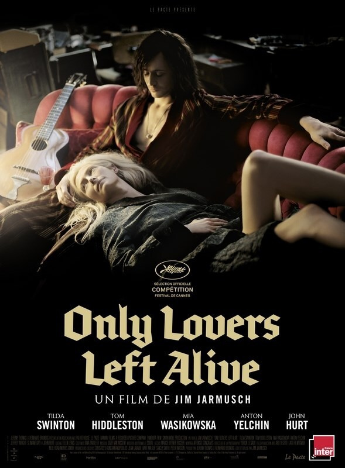
Оценка: ⭐⭐⭐☆☆
Чуть-чуть не хватило сюжета... Красивая картинка, красивые актеры, но не хватает глубины, раскрытия персонажей и мира. Может еще сыграли завышенные ожидания, потому что фильм позиционируеют как достойный просмотра
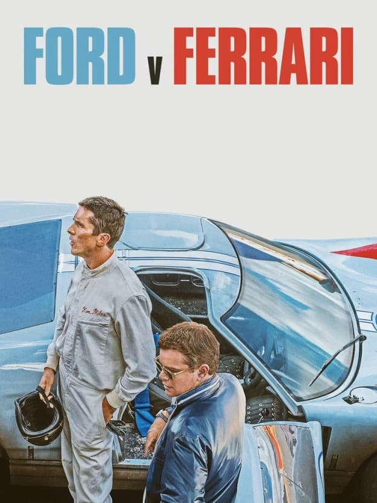
Оценка: ⭐⭐☆☆☆
Это же просто Форд против внутренней бюрократии. Честно говоря, показалось не очень интересным, вот буквально не зацепило, просто ничего особенного: достаточно предсказуемый сюжет, герои и их роль. Некоторые моменты очень красиво сняты, за это лайк!!
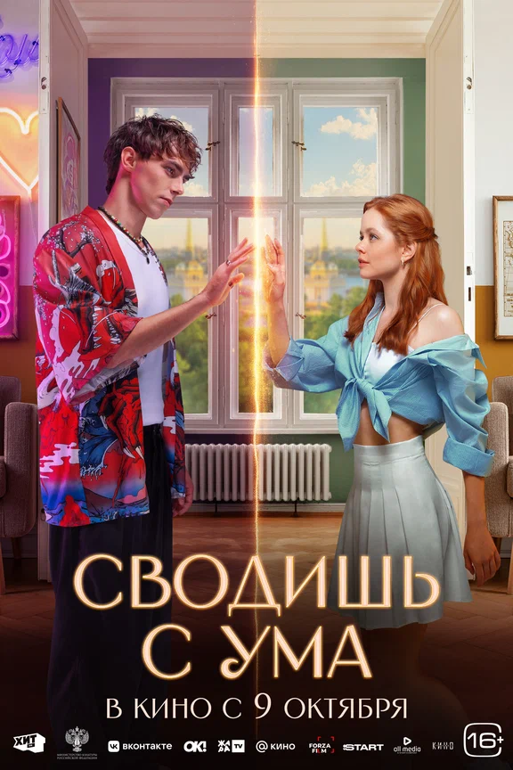
Оценка: ⭐⭐⭐⭐⭐
Спасибо, заставили рыдать и улыбаться!!!
Какая неднятина и милота, просто загляденье. Плюс очень понравилась картинка и визуальные решения. Честно не строила высоких ожиданий от фильма, поэтому приятно удивлена! Мягко, смешно, по-доброму. Слегка переживательно, но все сердечки будут бережно собраны в конце фильма.
Отдельная любовь к фильмам, снятым в Питере!! 💞
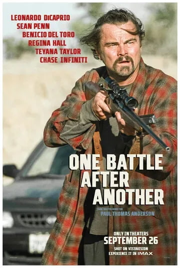
Оценка: ⭐⭐⭐☆☆
На самом деле, не впечатлило. Вторая часть фильма лучше. Если бы смотрела не в кино, а дома, то вообще не досмотрела бы
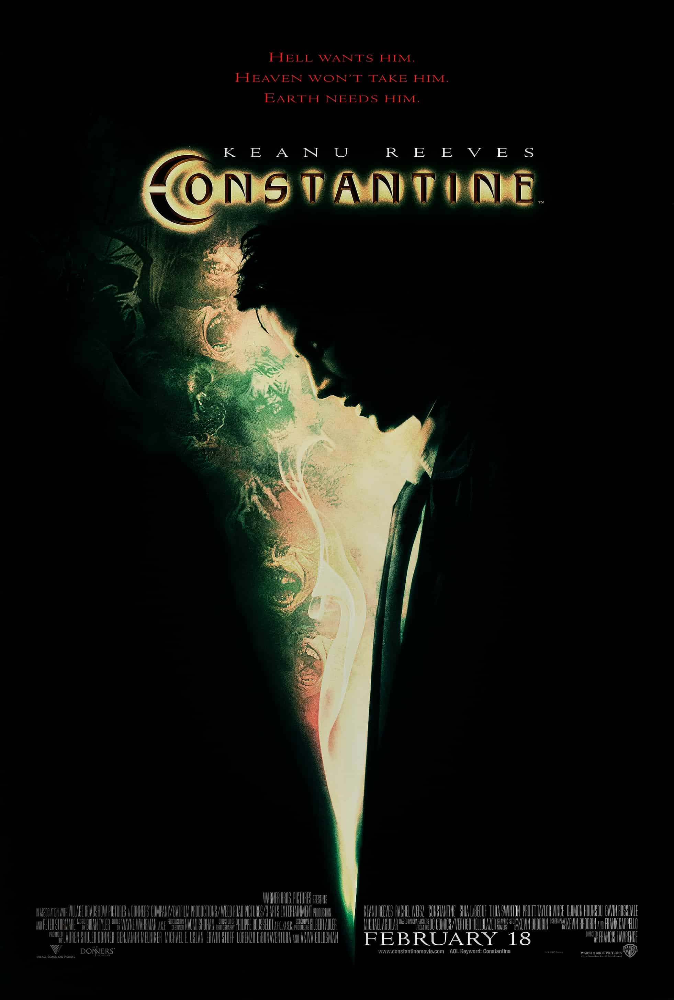
Оценка: ⭐⭐⭐⭐⭐
Ой, как хорошо!
Только сразу вопрос, всем настолько все равно на Чэса, что в конце даже не забрали его беднягу?
Честно говоря, не особо люблю Киану Ривза, но теперь видно откуда растут ноги у его образа самого себя в костюме.
Отдаю должное костюмерам, постановщикам, операторам и всем-всем кто приложил руки к картинке. Очень красиво! Можно разбираться покадрово и каждый будет выглядеть интересно
Рэйчел Вайс и Тильда Суинтон заслуживают отдельного восхищения, ой как им идут эти образы!
В целом, вайбы ночного дозора, только без продуктплейсмента и зажигательного рэп аутро. Выводы делайте сами
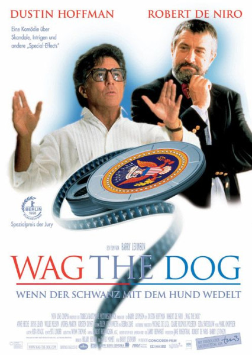
Оценка: ⭐⭐⭐⭐☆
Мы живем в сюре
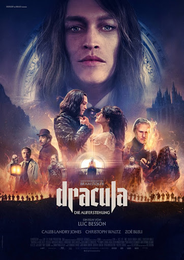
Оценка: ⭐⭐⭐⭐⭐
Как только я увидела трейлер, я уже знала, что фильм мне понравится!
Меня впечатлило! Знаю, что многие относятся скептически к пересказу известной истории, но летом я дала шанс графу Монте-Кристо, а теперь и Дракуле! И я снова не прогадала (Мне, кстати, очень понравился граф Монте-Кристо, я бы даже пересмотрела)!
Красивые кадры, захватывающая актерская игра, мне не хотелось отвлекаться от происходящего на экране. Филл Воронин отлично сыграл дебютную роль (шучу!! но уж очень похож!), а сама пара Дракулы и Элизабет просто прекрасна! Ну прям смотреть было приятно! Все очень эффектно, ярко и масштабно. Одна сцена в монастыре какая!! Тут и Кристоф Вальц был! А я с ним уже знакома!
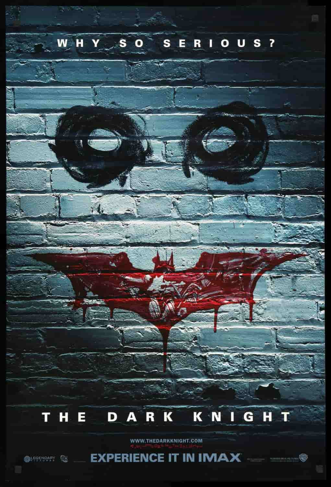
Оценка: ⭐⭐⭐☆☆
Эксперты посоветовали начать знакомство с Бетменом с этого фильма (спасибо, Милана). На самом деле, мне показалось, что эта история больше раскрыла всех антагонистов, чем Бетмена.
Фильм в целом очень богат на события и ощущается достаточно длинным. Мне кажется, что самому Бетмену отвелось мало сцен для выражения чувств. Не очень раскрыто как на нем отразилась смерть Рейчел, в этом плане переживаниям Харви уделено больше времени. Я все еще не понимаю, как все должно работать в супергероике, но я привыкла к другим главнм героям и к самому Бетмену я не привязалась. Странное послевкусие, вроде кино и объективно хорошее, но мне не очень понравилось
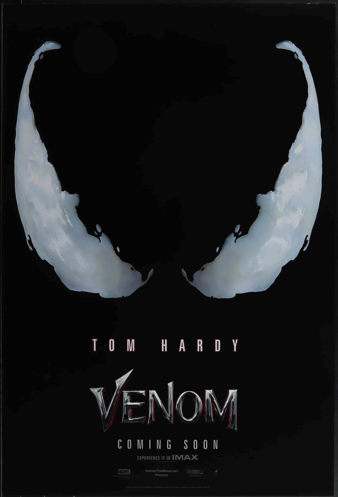
Оценка: ⭐⭐⭐☆☆
Меня не впечатлило, но может потому что я уже была концептуально знакома с сюжетом. А может я просто все еще не переношу супергероику? Может у меня на нее аллергия?
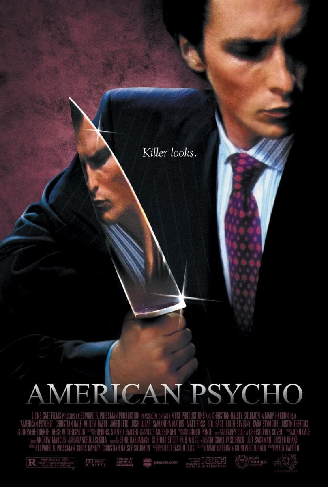
Оценка: ⭐⭐⭐⭐☆
Хорошая актерская игра, потому что мне было жутковато и не по себе. После этого фильма хочется помыться и не выходить из дома...
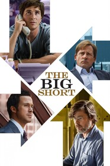
Оценка: ⭐⭐⭐☆☆
Мне оказалось скучновато, но я в целом сложно переношу такие фильмы. Актерский состав хороший, но все равно было утомительно
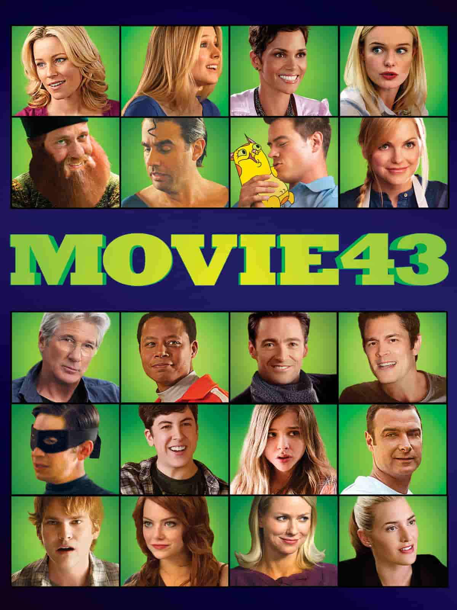
Оценка: ⭐⭐☆☆☆
Это было странно...
Оценка: ⭐⭐⭐☆☆
Люблю такие фильмы, где тебя еще могут удивить!
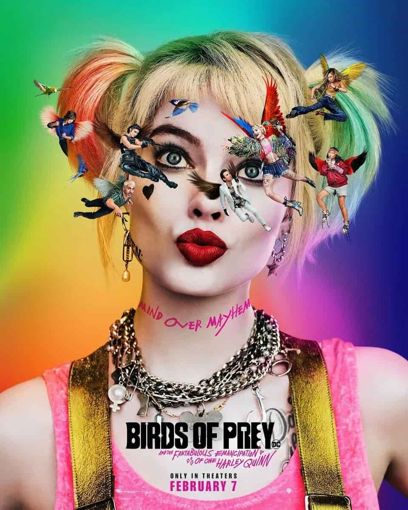
Оценка: ⭐☆☆☆☆
Скучно и не очень интересно. Но если вам нравится Марго Робби, то стоит посмотреть! А мне просто очень нравится Марго Робби...
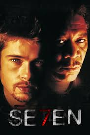
Оценка: ⭐⭐⭐⭐⭐
После этого фильма мне нужна реабилитация. Желательно пару дней смотреть только My Little Pony, а лучше просто трогать траву.
Некоторые повороты можно было угадать, но от этого мурашек меньше не становилось. Я еще и соблюла все правила просмотра: полная темнота, вечер, одна.
В этом фильме не могло быть хэппи энда
Вот сейчас бы было хорошо посмотреть ограбление по-итальянски, чтобы как-то перебить это послевкусие...
Только один вопрос, богатый маньяк реально будет брать все свои странные книжки в гос библиотеке? Очень порядочно
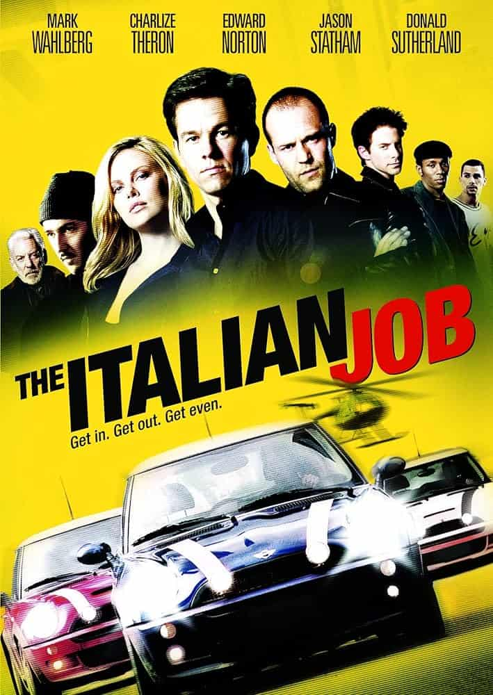
Оценка: ⭐⭐⭐☆☆
Лучшая реклама мини купера!
Очевидно, что я смотрела из-за Джейсона Стетхема и ограбления.
Простовато, скучновато, не зацепило...
Актер играющий Чарли вообще бесил, а актер из Бойцовского клуба бесил еще больше... Звезды только за Стетхема за рулем лодки и мини купера
P.S. финальная погоня на мини куперах это буквально сцена из миссии дарвина, change my mind
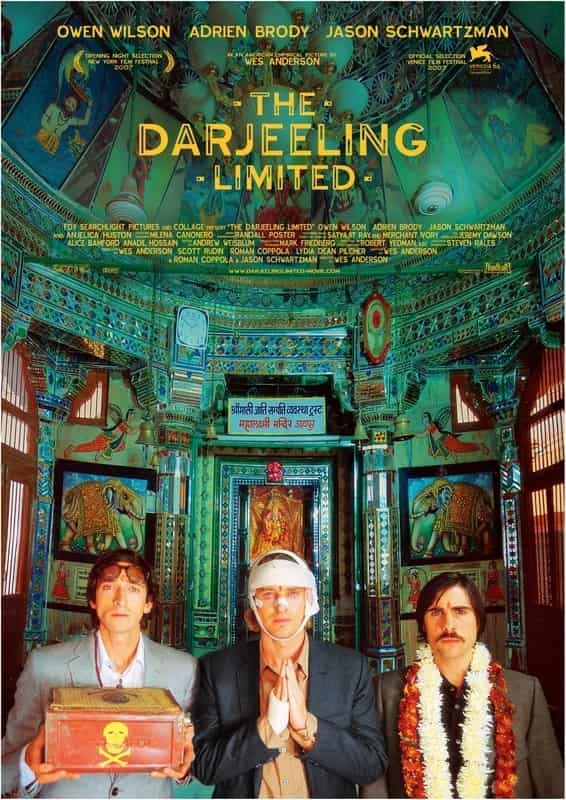
Оценка: ⭐⭐⭐☆☆
Я все никак не могу запомнить названия.
Не знаю, что для меня пошло не так во время просмотра этого фильма, но почему-то в отличии от других лент Андерсона тут я не впечатлена. Точнее, я даже уверена, что мне бы понравилось больше, есди бы я смотрела в другое время. Что-то не сошлось для этого фильма вчера - звезды были не в том положении, свет был слишком желтым или ужин пересоленным. Короче, попробуйте сами посмотреть этот фильм и помогите мне разобраться - дело во мне или в нем.
В нем есть все, чтобы мне понравится, но как-то не получилось. Возможно, я вернусь к нему потом и взгляну на него снова, другими глазами
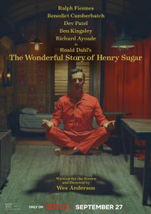
Оценка: ⭐⭐⭐⭐⭐
Тут все, что я люблю у Андерсона. Красивая картинка, складная история, за развитием которой интересно наблюдать. Бенедикт Камбербетч.
Это короткометражка, удивительно, что я ее не видела раньше. Но она, как и все у Андерсона, завораживает
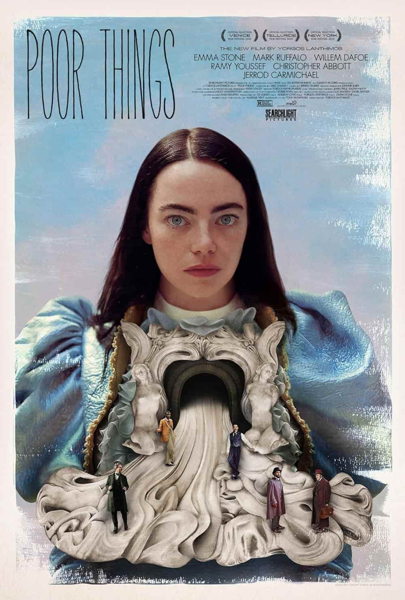
Оценка: ⭐⭐⭐⭐⭐
Мне понравилось все: актерская игра, костюмы, кадры, музыка, сюжет. Мне было интересно наблюдать за всеми стадиями развития Беллы. Захватывающе, интригующе и необычно. Отдельное спасибо Эмме Стоун, не удивительно, что ей дали Оскар за эту роль, это было прекрасно
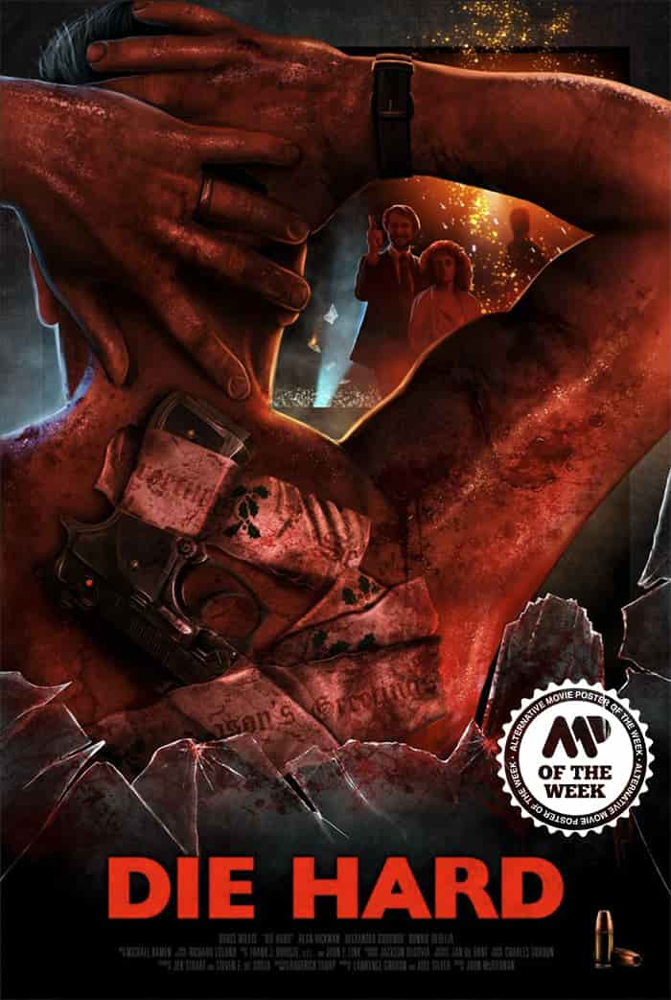
Оценка: ⭐⭐⭐⭐⭐
Классика. Не сезон летом смотреть дай хард, но как получилось.
Во-первых, yippee-ki-yay
Не сразу признала Алана Рикмана, но как ему идет роль злодея! Брюс прекрасен, опять в майке, еще с волосами
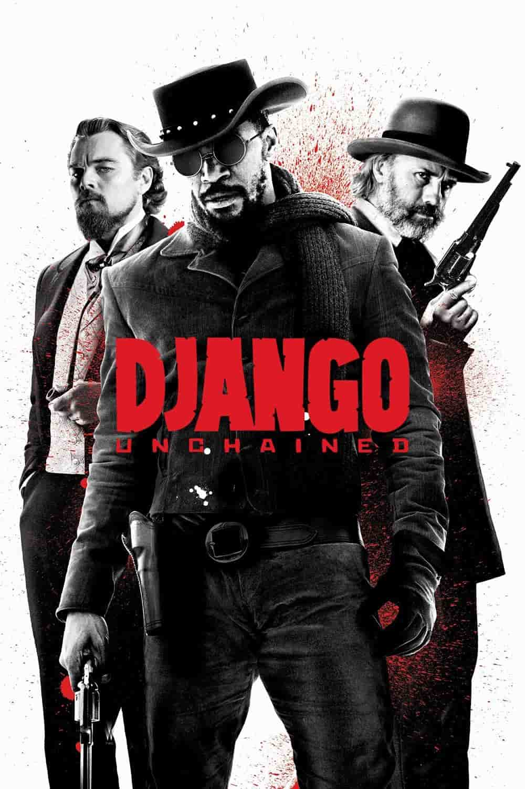
Оценка: ⭐⭐⭐⭐☆
Как же хорошо сыграл Кристоф Вальц! В этот раз роль у него была многоприятнее, чем в Бесславных ублюдках
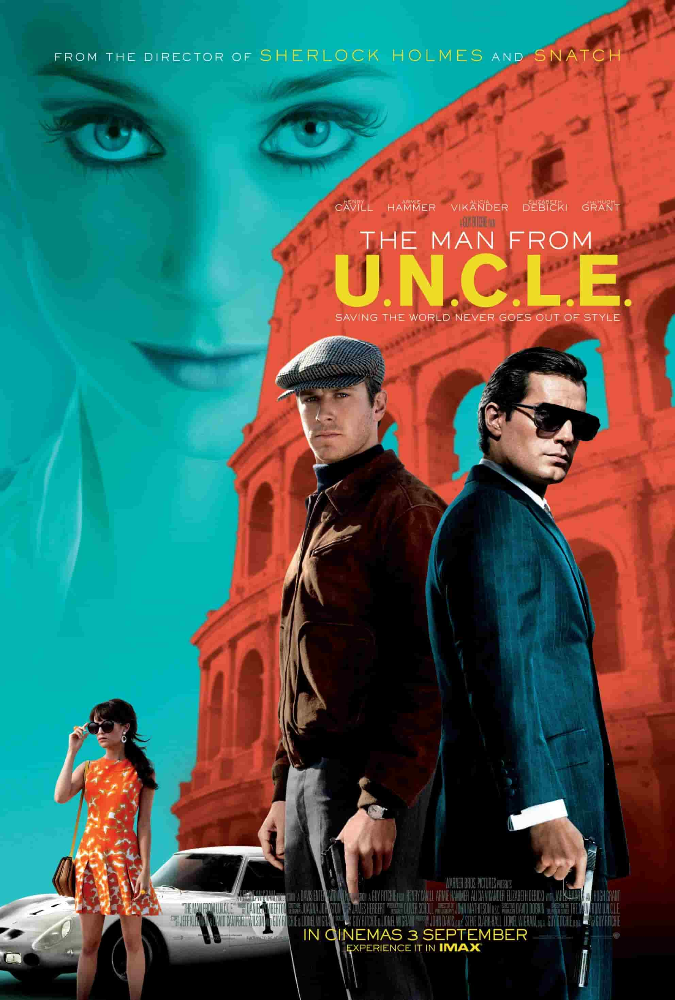
Оценка: ⭐⭐⭐⭐⭐
Я не верю, что Арми Хаммер не Илья Курякин, ну вы посмотрите на него, он же русский! Мне нравится в целом тематика тайных агентов, а тут еще и Илья Курякин!!
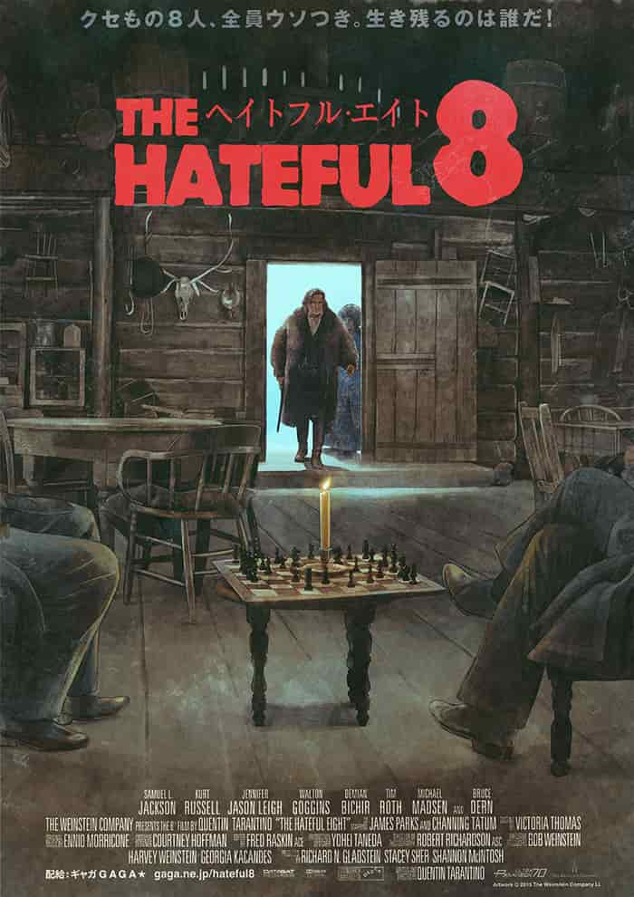
Оценка: ⭐⭐⭐⭐☆
Мне не очень понравилась развязка, но атмосфера что надо! Снежная буря, дом посреди ничего и 8 незаурядных персон внутри 👀
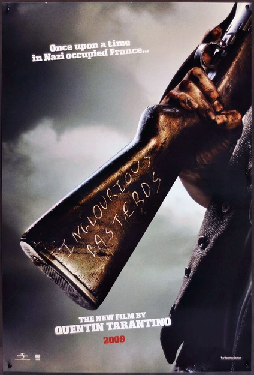
Оценка: ⭐⭐⭐⭐☆
Марафон фильмов с Бредом Питтем продолжается!
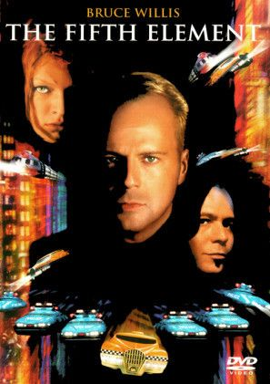
Оценка: ⭐⭐⭐⭐☆
Старое доброе, но не самое любимое. Нравится Милла Йовович и работа Жан-Поля Готье, костюмы просто вау!!
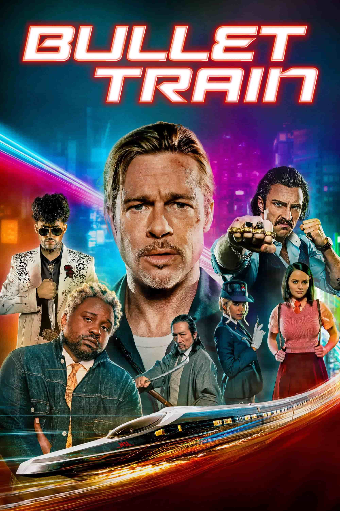
Оценка: ⭐⭐⭐⭐⭐
У меня прямо марафон фильмов с Бредом Питтом!
Декорации любимой Японии, разнообразие тем, героев, оружия, юмор, прическа Бреда Питта - все это просто великолепно сочетается и дарит отличный фильм, который уже хочется пересмотреть
Фильм пропитан фатализмом и красиво вписывается в канву произведений о судьбе, которые преследуют меня этим летом
"Поровозик Томас - это метафора, а не курс машиниста"
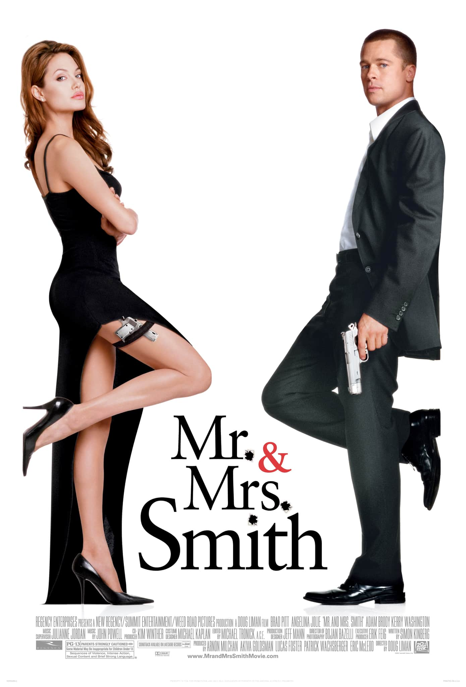
Оценка: ⭐⭐⭐⭐⭐
Во-первых, Анджелина Джоли
Во-вторых, Бред Питт.
Я люблю этот фильм, он пропитан химическими реакциями. Признаюсь, моя слабость к сильным женским перснажам и сеттингу про ассасинов сыграли свою роль
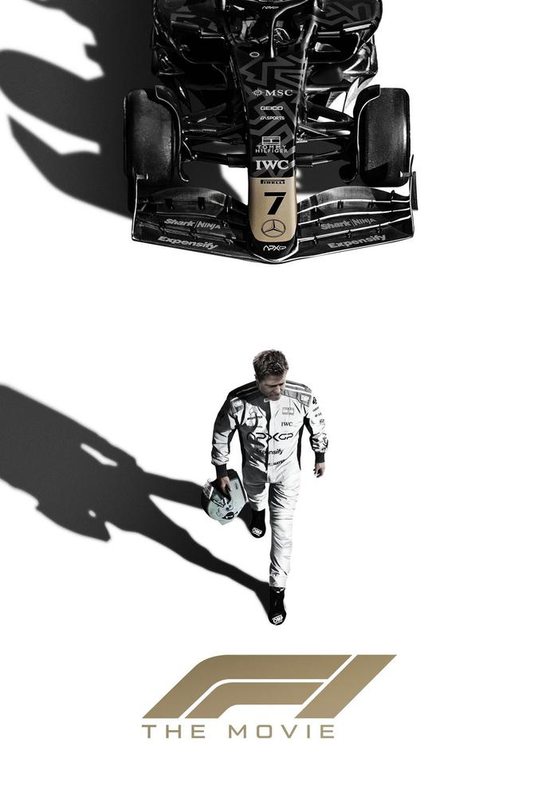
Оценка: ⭐⭐⭐⭐⭐
Признаюсь, я была очень скептически настроена к этому фильму, но меня нельзя винить, это травма, нанесенная Drive to Survive.
Видно Хэмильтон не зря внес свой вклад в создание фильма, получилось достаточно правдоподобно (простим все мелочи). Ф1 заслужил премию Оскар за операторскую работу, было очень приятно посмотреть на искры от днища в таком хорошем качестве. Отдельное спасибо за относительно большое количество Макса Ферстаппена в кадре!!